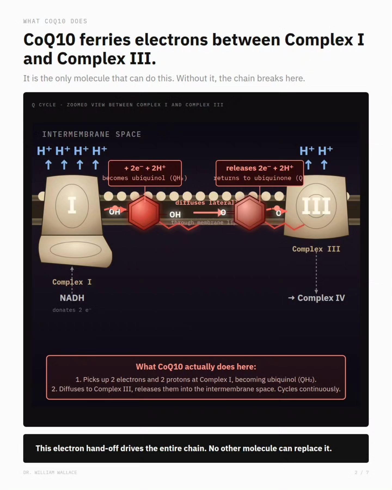
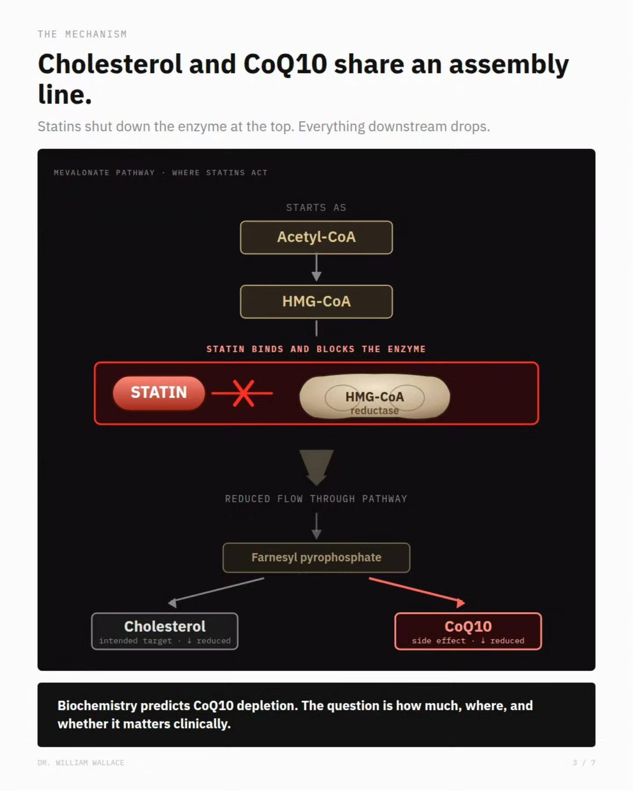
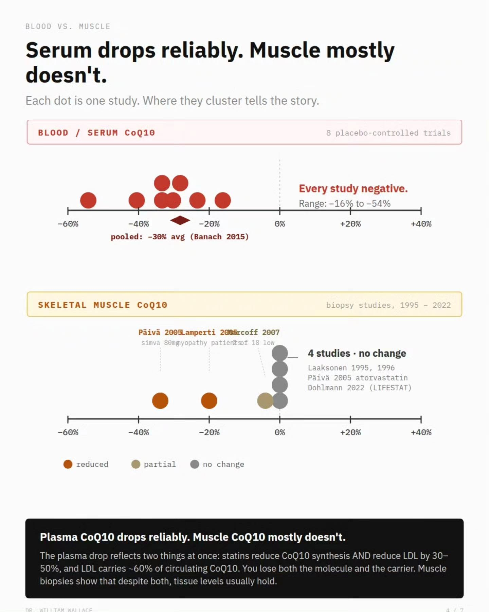

Coenzyme Q10 (CoQ10) is a compound your cells make and use to generate energy, and it is sold as a supplement in two forms, ubiquinone and ubiquinol. For people with heart failure the group's admins consider it the best-supported supplement for lowering cardiovascular death, based mainly on one randomized trial called Q-SYMBIO.12
The picture is much weaker for two other popular reasons people take it. First, CoQ10 is widely taken with statins to prevent muscle pain, but the best-designed trials show no reliable benefit for that. Second, several newer claims (kidney disease, depression, tinnitus, gum disease, Alzheimer's, fertility) rest on small, older or animal studies.3456
This article sorts the evidence by strength, quotes the numbers, and flags where the admins' enthusiasm outruns the data.
What CoQ10 is and why it matters
A widely shared explanation in the group makes a point many people miss: CoQ10 is more than an antioxidant. It is the only mobile electron carrier in the inner mitochondrial membrane. Complexes I and II of the electron transport chain cannot hand electrons directly to Complex III, so CoQ10 shuttles them across. Without it, the chain breaks, the proton gradient collapses and ATP (the cell's energy currency) production stalls.8
Most CoQ10 is made inside the body through the mevalonate pathway, the same pathway that produces cholesterol, with HMG-CoA reductase as its rate-limiting enzyme. Statins inhibit that enzyme, which is how they lower cholesterol and also how they lower CoQ10.8 A related video shared by Gokhan Can discusses geranylgeraniol, a molecule involved in making CoQ10, though he says he has no opinion on it yet.9


Louis Nervegna notes that many people in the group take CoQ10, particularly if they use a statin.1011 Dr. Joel Kahn is quoted as recommending it to cardiac patients to help prevent heart failure and heart attacks, and Rhonda Patrick's shared regimen lists 100 mg of ubiquinol daily; both are personal practice, not trial data.1213
The evidence in heart failure: Q-SYMBIO
Q-SYMBIO was a randomized, double-blind, placebo-controlled trial published in JACC: Heart Failure in 2014. Mortensen and colleagues enrolled 420 patients with moderate to severe chronic heart failure (NYHA class III-IV) at 17 centers in nine countries. Participants received 100 mg of ubiquinone three times daily (300 mg per day) or matching placebo for two years, as an add-on to standard heart-failure therapy.12
Key results:
- Primary long-term endpoint (major adverse cardiovascular events, such as unplanned heart failure hospitalization, cardiovascular death, urgent transplant or mechanical support): 15% in the CoQ10 group versus 26% on placebo, hazard ratio 0.50 (95% CI 0.32-0.80; p = 0.003).12
- Cardiovascular mortality: 9% versus 16% (p = 0.026). All-cause mortality: 10% versus 18% (p = 0.018). Hospital stays for heart failure were also significantly lower (p = 0.033).2
- Short-term endpoints at 16 weeks (NYHA class, 6-minute walk test and NT-proBNP, a heart-strain blood marker) showed no significant changes.2
Louis describes this as CoQ10 cutting cardiovascular death "in half"; the post that summarizes the trial puts the cardiovascular-death reduction at 44% (9% versus 16%) and the composite endpoint reduction at 43%.1 Another summary rounds it to roughly 50%.2 Louis states that CoQ10 has the strongest evidence base of any dietary intervention for reducing cardiovascular death in heart failure.1
A few cautions follow from the posts themselves. The shared analysis notes that people promoting CoQ10 tend to forget the trial's details: patients were already on guideline-directed medical therapy, and CoQ10 was added on top of optimal care, not instead of it.1 The other summary says the trial size was modest, so the findings are promising but not yet definitive without larger confirmation.2 The short-term measures were unchanged, so the benefit appears in hard outcomes over two years rather than in how people feel after four months.2
Broader cardiovascular evidence
A review of 884 trials
A JACC systematic review of 884 randomized trials (883,627 participants, 27 micronutrients), quoted by Louis, listed coenzyme Q10 among supplements with moderate to high quality evidence for reducing cardiovascular risk factors, and reported that CoQ10 decreased all-cause mortality events (RR 0.68; 95% CI 0.49-0.94).14 The same review found omega-3 lowered CVD mortality and folic acid lowered stroke, while vitamins C, D, E and selenium alone had no effect on cardiovascular disease or type 2 diabetes.14
Endothelial function
A Linus Pauling Institute summary shared by Louis said that combining five small randomized trials, supplemental CoQ10 at 150 to 300 mg per day for 4 to 12 weeks modestly improved endothelial function (how well the blood-vessel lining works) in people with and without cardiovascular disease.15
Selenium plus CoQ10
Louis highlights a trial in older people who took selenium plus CoQ10 for four years and had a cardiovascular death rate reduced by more than half. Follow-up reports in the quoted Life Extension article said that 10 years after the trial ended the group was 49% less likely to die from cardiovascular causes, and 12 years after, the benefit was 41%, including in people with heart disease, diabetes and high blood pressure.101116
The caveats are significant. The source is a supplement-company magazine, the trial is not named in the posts, and Louis himself says you can poke holes in its quality and that skepticism is warranted. He argues the risk is very low and suggests adding about 200 micrograms of selenium (the amount in two Brazil nuts) for people who already take CoQ10.1016 The 884-trial review above found no cardiovascular effect from selenium alone, which is a reminder that this combination result should be treated as tentative.14
A separate small trial of aged garlic extract plus CoQ10 in 65 asymptomatic men found less coronary calcium progression over a year (32 versus 58 on the study's measure) than placebo, but the garlic extract was part of the combination, so CoQ10's own contribution is unclear.17
CoQ10 and statins
Does CoQ10 prevent statin muscle pain?
The group's posts give two answers to this common question, and the evidence favors the cautious one.
- Statins lower CoQ10 in blood and in immune cells, but the effect on muscle tissue is barely detectable. A shared summary concludes that CoQ10 will not reliably prevent statin muscle symptoms, the best-designed trials show no benefit, and supplementation may not raise muscle CoQ10.3
- Louis writes that CoQ10 is worth a try but that most trials for statin muscle pain have failed. He cites a story about gene variants affecting HMG-CoA reductase as the likely root cause of statin muscle pain in susceptible people, which CoQ10 would not address. He still says there is no harm in trying.4

Louis adds a distinction: statins do lower CoQ10 production, so it is still reasonable to take CoQ10 with a statin to offset that, even though CoQ10 has nothing to do with the root cause of muscle pain.4 The group does not present trial evidence that this offsets any clinical harm, so this is best read as his opinion.
What does help, and the nocebo effect
For muscle pain, Louis lists lowering the dose or trying a different statin (for example, switching from lipophilic to hydrophilic, with pitavastatin or pravastatin often tolerated), or moving to non-statin LDL-lowering drugs.4
He also warns about the nocebo effect (symptoms driven by expectation of harm). A pooled analysis of 19 blinded trials with 123,940 people found that over about four years 27.1 in 100 people on a statin reported muscle pain or weakness versus 26.6 in 100 on a dummy pill, which implies only about 1 in 15 complaints in the first year was truly caused by the statin. The London SAMSON trial, in which people who had quit statins took a statin, a dummy pill or nothing, found symptoms almost as bad on the dummy pill.7 Louis cites a figure of up to 90% of reported statin side effects possibly being nocebo.4
Other claims: promising, but early
- Kidney disease. A randomized, double-blind, placebo-controlled trial from 2000 reported that 36.2% of kidney patients taking CoQ10 required dialysis versus 90% on placebo. The poster stresses CoQ10 is not claimed to reverse kidney disease and says the finding has been replicated, though no details are given; the trial is old, so larger recent confirmation matters.5
- Depression. A recent meta-analysis of randomized trials found CoQ10 at 100-500 mg per day, mostly as add-on therapy, improved depressive symptoms with a moderate effect size; no single dose or form was identified as best. Louis points out depression is a CVD risk factor.18
- Tinnitus. A 2025 double-blind trial of 50 people with age-related hearing loss gave 100 mg daily for six weeks; sleep disturbance scores improved by 7.6 points versus 1 point on placebo. Louis says CoQ10 might help; the posts note it is a small study and unrelated to heart health.19
- Gum disease. A 2022 meta-analysis of 11 clinical trials found CoQ10, topical or oral, reduced gum bleeding and inflammation alongside standard periodontal treatment.20
- Alzheimer's disease. In a Nature Aging mouse study, daily CoQ10 injections cut the release of harmful mitochondria-derived vesicles and preserved memory. A 16-week randomized trial in 78 people with mild to moderate Alzheimer's found 1,200 mg per day of oral CoQ10 was safe but did not change cerebrospinal-fluid markers or thinking scores, and the authors did not support larger trials at that dose. Louis calls human trials mostly disappointing but suggests it might still work as early prevention, and stresses mouse work shows mechanisms, not proof.6
- Platelets and aging. An Aging Cell mouse study found dietary CoQ10 restored function of aged bone-marrow cells that make platelets (which become stickier with age, raising heart attack and stroke risk). Louis calls it promising but animal-only.21
- Fertility. A shared explainer argues CoQ10 may support egg mitochondria in older women. Louis says the mechanisms are fairly well understood; the posts give no trial results.22
- Mitoquinone (MitoQ). A news item described an improved form of CoQ10 that showed potential to reverse early signs of heart failure in type 2 diabetes, with larger trials planned.23
Nuances and common misconceptions
- "Cuts death in half" is not the whole story. The headline figure applies to heart failure patients on standard therapy over two years, and the trial's short-term measures were unchanged.12
- Statin depletion is real but may not matter for muscles. Blood levels fall, but muscle levels barely change.3
- Source quality varies. The selenium plus CoQ10 data come from a company magazine; the kidney trial is from 2000; many other findings are mouse studies. Several posts label these findings as preliminary or animal-only.51021
- Admin enthusiasm. The tone in several posts is bullish (for example "the CoQ10 that you take for your heart might also be improving your oral health"). Treat these as opinions layered on early evidence.20
What this means for you
- If you have heart failure, the group's admins point to Q-SYMBIO as the main evidence; the trial used 100 mg three times daily on top of standard care, so discuss it with your cardiologist rather than as a substitute for treatment.12
- If you take a statin and have muscle symptoms, CoQ10 may be worth a try according to Louis, but the evidence says do not count on it; dose reduction, switching statins or non-statin drugs are alternatives to raise with your doctor.34
- Be aware of the nocebo effect before blaming a statin.7
- Treat the kidney, depression, tinnitus, gum disease and Alzheimer's claims as early findings to discuss with a clinician, not established treatments.56181920
- If you add selenium to CoQ10, the amount Louis mentions is about 200 micrograms, with the caveat that the supporting evidence is weak.16
Frequently asked questions
Does CoQ10 help heart failure?
In Q-SYMBIO, adding 300 mg per day to standard care for two years lowered major adverse cardiovascular events from 26% to 15% and cardiovascular death from 16% to 9%. The trial was modest in size and short-term function measures did not change.2
Does CoQ10 prevent statin muscle pain?
Not reliably. Statins lower CoQ10 in blood and immune cells but barely in muscle, and the best trials show no benefit. Louis says it is harmless to try.34
Do statins really cause most muscle aches?
A pooled analysis of 19 blinded trials found 27.1% versus 26.6% muscle symptoms on statin versus placebo, implying about 1 in 15 complaints was caused by the statin.7
Should I take ubiquinone or ubiquinol?
The posts do not compare forms. Q-SYMBIO used ubiquinone, and Rhonda Patrick's shared list includes 100 mg of ubiquinol.113
Is selenium plus CoQ10 proven?
No. The reported 49% and 41% lower cardiovascular death at 10 and 12 years come from a company magazine's description of a trial that is not named, and Louis calls skepticism warranted.1116
Does CoQ10 help Alzheimer's disease?
Not so far in humans: a 1,200 mg per day trial in 78 people showed no change in biomarkers or cognition. Mouse data suggest a possible role in early prevention.6